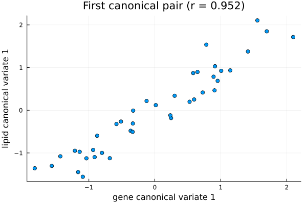
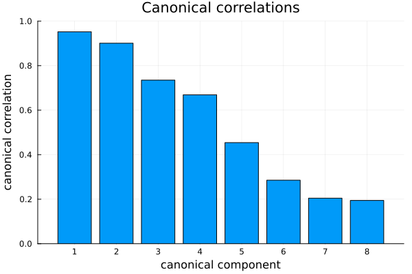

CCA: Canonical Correlation Analysis
Canonical Correlation Analysis or CCA is used to study the relationship between two sets of variables which are measured on the same samples. One from each set, CCA finds pairs of linear combinations which are maximally correlated. These are called canonical variates and they summarize the shared structure between the two sets which is the strongest way in which they co-vary.
The result gives the canonical correlations and, for each side, the canonical directions — recovered so that the resulting variates have unit variance.
In this documentation, we will depomstrate implementation of CCA using BigRiverEssence.cca on the nutrimouse dataset.
The method
Let us consider two centered data matrices $X$ (with $d_x$ variables) and $Y$ (with $d_y$ variables). They both have the same $n$ samples. CCA finds the direction vectors $a$ and $b$ such that the correlation between the projected variates $a^\top X$ and $b^\top Y$ is maximized. Thus, consider the following optimization proble: $\max_{a,b} \; \operatorname{corr}(a^\top X, \, b^\top Y).$ The first canonical pair obtained is the most correlated. After that each subsequent pair is the most correlated subject to being uncorrelated with the previous ones. The strength of each pair is its canonical correlation and has a value in $[0,1]$.
Following Weenink 2003, cca solves this directly with the help of singular value decompositions of the two centered data sets. This provides it with numerical stability. Since classical CCA estimates correlations from the data, it requires more samples than variables on either side. If this criteria is not met, the canonical correlations will trend spuriously toward 1. When the variable sets are wide, the sparse variant scca should be used instead.
The result gives the canonical correlations and, for each side, the canonical directions — recovered so that the resulting variates have unit variance.
The data
We use the nutrimouse dataset. The nutrimouse dataset comes from a nutrigenomic study in mice (Martin et al., 2007) [1], containing the expression of 120 genes and the concentrations of 21 hepatic fatty acids measured on the same 40 mice. It is obtained via the mixOmics R package [2].
using BigRiverEssence, DelimitedFiles, Plots, Statisticsdatadir = joinpath(pkgdir(BigRiverEssence), "reference_Data", "nutrimousedata")
# read with header=true so we get both the data and the column names
gene_data, gene_header = readdlm(joinpath(datadir, "genes.csv"), ',', Float64, header = true)
lipid_data, lipid_header = readdlm(joinpath(datadir, "lipids.csv"), ',', Float64, header = true)
gene_full = gene_data # 40 × 120
lipid_full = lipid_data # 40 × 21
gene_names = vec(gene_header) # 120 gene names
lipid_names = vec(lipid_header) # 21 lipid names
size(gene_full), size(lipid_full)((40, 120), (40, 21))Reducing to satisfy n > variables
As we discussed before, classical CCA ideally needs more samples than variables on either side. With only $40$ mice, we cannot use all the $120$ genes. This will make the canonical correlations degenerate toward $1$. To solve this problem, we only keep a small set on each side. We choose the $8$ most-variable genes and lipids since they should carry the most signal.
It is important to note that cca also expects variables in rows and observations in columns. So after subsetting we should transpose both blocks.
ngene, nlip = 8, 8 # keep 8 each ⇒ n = 40 > 8, 8 (stable)
gene_var = vec(var(gene_full, dims = 1))
lipid_var = vec(var(lipid_full, dims = 1))
gsel = sortperm(gene_var, rev = true)[1:ngene] # top-variance genes
lsel = sortperm(lipid_var, rev = true)[1:nlip] # top-variance lipids
X = Matrix{Float64}(transpose(gene_full[:, gsel])) # 8 × 40 (genes × mice)
Y = Matrix{Float64}(transpose(lipid_full[:, lsel])) # 8 × 40 (lipids × mice)
size(X), size(Y)((8, 40), (8, 40))With n = 40 observations against dx = dy = 8 variables, CCA is well-conditioned and the stability warning in cca will not fire.
Fitting the model
Now we fit cca to $X$ and $Y$ and note the cannonical correlations.
m = cca(X, Y) # :svd solver by default
m.corrs # canonical correlations, descending8-element Vector{Float64}:
0.9523239403367779
0.9009956061552251
0.7351224381011254
0.669190657587375
0.4543971253533895
0.28538365211305156
0.20473098321451144
0.19437273980817038The fitted CcaStructure holds the means, the canonical directions for each side (xproj, yproj), and the canonical correlations (corrs).
The first canonical pair
If we project the mice onto the first canonical direction of each side using cca_transform, it will give us two scores per mouse. Plotting one against the other will show us the shared structure CCA have found.
Vx = cca_transform(m, X, :x) # canonical variates, X side
Vy = cca_transform(m, Y, :y) # canonical variates, Y side
scatter(Vx[1, :], Vy[1, :]; legend = false,
xlabel = "gene canonical variate 1", ylabel = "lipid canonical variate 1",
title = "First canonical pair (r = $(round(m.corrs[1], digits = 3)))")
In the above plot, each point is a mouse which is placed by its gene-side canonical score (horizontal) and its lipid-side canonical score (vertical). Since CCA maximizes the correlation between the two we can clearly see the points falling close to a line. This is the shared axis of variation: a particular combination of genes co-varies almost perfectly with a particular combination of lipids across the 40 mice. We get a canonical correlation of about 0.95.
The canonical correlations
We can see get a better look at the cannonical correlations by simply plotting them as a bar plot.
bar(m.corrs; legend = false, xticks = 1:length(m.corrs),
xlabel = "canonical component", ylabel = "canonical correlation",
title = "Canonical correlations", ylims = (0, 1))
We see in the above plot, the canonical correlations are descending from about $0.95$, with the first two pairs being strong (with about $0.95$ and $0.90$) and the rest tapering off. Like a scree plot, this shows us how many canonical pairs carry real shared structure between the gene and lipid sets versus noise.
Interpreting the canonical directions
The canonical directions reveal which variables drive the shared structure.
sel_gene_names = gene_names[gsel]
sel_lipid_names = lipid_names[lsel]
@show [sel_gene_names m.xproj[:, 1]] # gene direction 1: weight per selected gene
@show [sel_lipid_names m.yproj[:, 1]] # lipid direction 1: weight per selected lipid8×2 Matrix{Any}:
"C18.2n.6" -0.0769156
"C18.1n.9" 0.0397843
"C18.3n.3" -0.0571766
"C22.6n.3" -0.163486
"C20.4n.6" -0.0106429
"C16.0" 0.0479282
"C18.1n.7" 0.0392626
"C16.1n.7" -0.242009We see that, on the gene side, THIOL, S14, and L.FABP (positive) together with CYP3A11 and CYP4A14 (negative) dominate the first component. On the other hand, on the lipid side, C16.1n.7 and C22.6n.3 contribute most. These are lipid-metabolism genes and fatty acids, so the first canonical pair captures a genuine biological link between hepatic gene expression and lipid composition.
Summary
In this document we used cca to find, given liver gene expression and lipid concentrations on the same $40$ mice, pairs of gene and lipid combinations that co-vary. We found the first correlated pair correlated at about $0.95$, driven by recognizable lipid-metabolism genes and fatty acids.
References
[1] Martin, P. G. P., Guillou, H., Lasserre, F., Déjean, S., Lan, A., Pascussi, J.-M., San Cristobal, M., Legrand, P., Besse, P., & Pineau, T. (2007). Novel aspects of PPARα-mediated regulation of lipid and xenobiotic metabolism revealed through a nutrigenomic study. Hepatology, 54, 767–777.
[2] Rohart, F., Gautier, B., Singh, A., & Lê Cao, K.-A. (2017). mixOmics: An R package for 'omics feature selection and multiple data integration. PLoS Computational Biology, 13(11), e1005752.